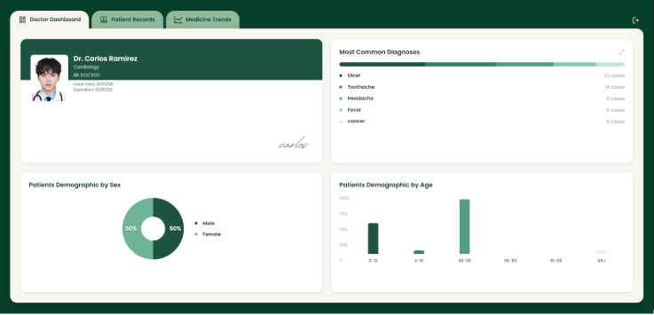
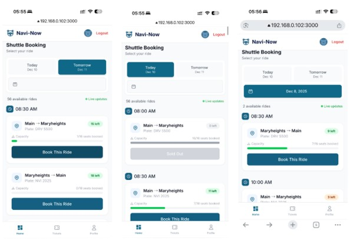
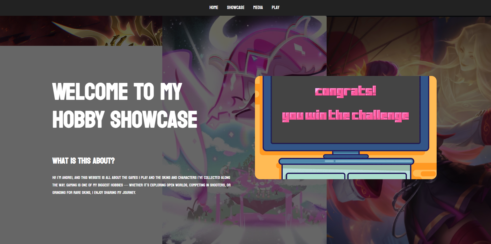

Frontend Development
HTML, CSS, responsive layouts, visual hierarchy, and user-facing interface implementation.
Computer Science Student · Software Development · UI/UX
I build practical, user-focused applications with clean interfaces, reliable features, and organized database workflows.
I am a 3rd-year Computer Science student focused on software development, web applications, UI/UX design, and database-backed systems. I enjoy turning project requirements into working applications that are clear, maintainable, and useful for real users.
Portfolio Focus
My projects show experience in frontend development, backend logic, CRUD operations, relational databases, and collaborative project work.
Technical Skills
I work across interface design, application logic, database operations, and collaborative development tools.
HTML, CSS, responsive layouts, visual hierarchy, and user-facing interface implementation.
CRUD workflows, PHP, Java, MySQL, SQL, and relational database design for application data.
Clean layouts, usability, interface flow, and design decisions that make systems easier to use.
Git, GitHub, GitLab, documentation, debugging, and collaborative software development.
Selected Work
A collection of academic and personal projects involving web systems, desktop applications, databases, and logic programming.

Frontend and Backend Developer
Built core CRUD features and database workflows for a prescription tracking system that manages patient records, medicine information, and prescription-related data.

Backend Developer
Contributed backend logic for a passenger booking web application, including user data handling, booking records, and ticket detail management.
Developer
Developed a Prolog-based prerequisite checker that evaluates BSCS course eligibility and generates recursive roadmap paths based on curriculum rules.
Frontend and Backend Developer
Created features for managing volunteer information, including adding, editing, and organizing participant records for smoother organization workflows.

Frontend Developer
Designed and implemented a responsive personal website that presents hobbies through structured content, custom styling, and clean visual sections.
Mobile AI Integration / Application Developer
Contributed to an AI-powered fitness tracking mobile application by assisting in ST-GCN model validation, Android integration, routing fixes, exercise library development, and set summary functionality.